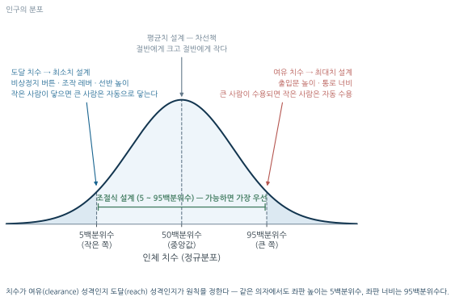
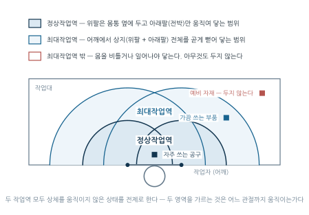
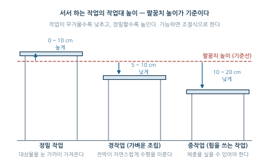
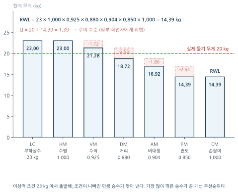
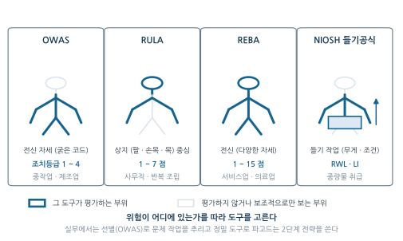

12주차. 인간공학과 근골격계질환
작업을 인간에게 맞추는 원리, 인체측정과 작업역·작업대 설계, 근골격계질환(MSDs)의 종류와 위험요인, NIOSH 들기공식, 관찰적 평가도구(RULA·REBA·OWAS), 한국의 유해요인조사 제도
학습목표
이 주를 학습한 후 여러분은 다음을 할 수 있어야 합니다:
- 인간공학의 목적과 “작업을 인간에게 맞춘다”는 적합화 원리를 설명할 수 있다
- 인체측정 자료의 백분위수 개념과 설계 응용원칙(극단치·조절식·평균치)을 실제 설계 문제에 적용할 수 있다
- 정상작업역과 최대작업역을 구분하고 작업대·의자·수공구 설계 원칙을 설명할 수 있다
- 근골격계질환(MSDs)의 주요 종류와 위험요인을 구분할 수 있다
- NIOSH 들기공식의 승수 구조를 이해하고 RWL과 LI를 계산·해석할 수 있다
- 관찰적 평가도구(RULA·REBA·OWAS)의 용도를 비교하고 상황에 맞는 도구를 선택할 수 있다
- 한국의 근골격계 부담작업 유해요인조사 제도의 구조를 설명할 수 있다
1. 인간공학이란 무엇인가 · 작업역과 작업대 설계
1.1 인간공학이란 무엇인가
정의와 목적
인간공학(Ergonomics, Human Factors Engineering)은 인간의 능력과 한계를 고려하여 기계, 도구, 작업환경을 설계하는 학문이다. 전통적인 공학이 “인간을 기계에 맞추는” 접근을 취했다면, 인간공학은 정반대로 “기계와 작업을 인간에 맞추는” 것을 핵심 원리로 한다.
이 원리는 낯선 것이 아니다. 1주차에서 본 ILO/WHO 산업보건의 핵심 원칙 — “작업을 인간에게, 인간을 작업에 적합하게(Fitting the work to the worker)” — 을 구체적인 설계 기술로 실현하는 것이 바로 인간공학이다.
인간공학의 목적은 네 가지로 정리된다.
- 작업자의 안전과 건강 보호 (산업위생 관점의 1차 목적)
- 작업 효율성과 생산성 향상
- 오류와 사고의 감소
- 작업자의 편의성과 만족도 증대
건강 보호와 생산성이 나란히 놓여 있다는 점이 중요하다. 인간에게 무리를 주는 작업은 장기적으로 생산성도 떨어뜨리므로, 두 목적은 대립하지 않는다.
산업위생 속의 인간공학
유해인자 4분류 중 인간공학적 인자는 소음이나 유기용제처럼 공기 중에 존재하는 물질이 아니라 작업의 방식 그 자체 — 자세, 동작, 힘, 반복 — 에 내재한 유해요인이다. 그래서 평가 방법도 다르다. 화학물질은 공기 시료를 채취해 농도를 재지만(2~3주차), 인간공학적 인자는 작업을 관찰하고 자세·힘·빈도를 기록·점수화한다. 이 주에 배우는 NIOSH 들기공식(§2.2)과 관찰적 평가도구(§3.1)가 산업위생의 “측정기” 역할을 한다.
인체측정과 백분위수
작업을 인간에 맞추려면 먼저 인간의 치수를 알아야 한다. 인체측정학(Anthropometry)은 인체 각 부위의 치수를 측정하고 통계적으로 분석하여 설계에 활용하는 학문이다. 인체 치수는 대체로 정규분포를 따르므로, 설계 기준은 백분위수(percentile)로 표현한다.
- 5th percentile: 전체 인구의 5%가 이 값보다 작다 (작은 쪽 극단)
- 50th percentile: 중앙값
- 95th percentile: 전체 인구의 95%가 이 값보다 작다 (큰 쪽 극단)
인체측정치에는 두 종류가 있다. 무엇을 어떻게 재는가의 구분이다.
| 구분 | 다른 이름 | 측정 상태 | 예 |
|---|---|---|---|
| 구조적 치수 | 정적(static) 측정 | 표준 자세에서 움직이지 않는 상태로 측정 | 키, 앉은키, 어깨너비, 팔 길이 |
| 기능적 치수 | 동적(dynamic) 측정 | 실제 움직이는 자세에서 측정 | 팔을 뻗어 닿는 범위, 운전 자세의 조작 범위 |
기능적 치수는 특정 작업에 국한되어 정의되므로 같은 사람이라도 작업에 따라 값이 달라지며, 실제 작업공간 설계에는 더 직접적인 정보를 준다.
설계 응용원칙 — 잰 값을 어떻게 쓸 것인가
측정된 치수를 설계에 적용하는 원칙은 세 가지다: ① 극단치(최대치·최소치) 설계, ② 조절식 설계, ③ 평균치 설계. 치수의 종류(구조적/기능적)와 자료의 활용원칙은 서로 다른 층위의 개념이라는 점에 주의하자 — “구조적 치수 기준의 설계”라는 별도의 응용원칙이 있는 것이 아니다.
| 설계 원칙 | 적용 백분위 | 논리 | 적용 예시 |
|---|---|---|---|
| 최대치 설계 | 95th | 큰 사람이 수용되면 작은 사람은 자동으로 수용된다 (여유 치수) | 출입문 높이, 통로 너비 |
| 최소치 설계 | 5th | 작은 사람이 닿으면 큰 사람은 자동으로 닿는다 (도달 치수) | 비상정지 버튼, 조작 레버, 선반 높이 |
| 조절식 설계 | 5th ~ 95th | 개인에 맞게 조절 — 가능하면 가장 우선 고려 | 의자 높이, 책상 높이 |
| 평균치 설계 | 50th | 조절이 불가능할 때의 차선책 | 계단 높이, 문 손잡이 |

원칙 선택의 열쇠는 그 치수가 여유(clearance) 성격인지 도달(reach) 성격인지를 판별하는 것이다. 여유 치수는 큰 쪽 극단(95th)에, 도달 치수는 작은 쪽 극단(5th)에 맞춘다. 평균치 설계가 마지막 순위인 이유는 분명하다 — “평균적인 사람”에 맞춘 설계는 절반의 사람에게 크고 절반의 사람에게 작으며, 평균에 정확히 맞는 사람은 사실상 없다.
다음 각 시설물을 설계할 때 적용할 백분위수와 설계 원칙을 정하라.
- 공장 출입문의 높이
- 컨베이어 라인의 비상정지 버튼 위치
a — 최대치 설계(95th percentile). 키가 큰 사람도 머리를 부딪히지 않고 통과해야 한다. 여유 성격의 치수이므로 큰 쪽 극단을 수용하면 작은 사람은 자동으로 만족된다.
b — 최소치 설계(5th percentile). 팔이 짧은 사람도 손이 닿아야 한다. 도달 성격의 치수이므로 작은 쪽 극단에 맞추면 큰 사람은 자동으로 만족된다. 비상 상황에서는 “거의 모두 닿는” 정도로는 부족하다는 점이 극단치 설계의 논리다.
1.2 작업역과 작업대 설계
정상작업역과 최대작업역
작업대 위에서 손이 닿는 범위를 어떻게 설정하느냐가 자세·피로·근골격계 부담을 좌우한다. 인간공학에서는 이 범위를 두 겹의 동심 원호로 구분한다.

| 구분 | 정의 |
|---|---|
| 정상작업역 (normal area) | 위팔(상완)을 몸통 옆에 자연스럽게 내린 자세에서 아래팔(전박)의 움직임만으로 편안하게 도달 가능한 영역. 곧 전박과 손으로 조작할 수 있는 범위 |
| 최대작업역 (maximum area) | 어깨에서부터 상지(위팔 + 아래팔)를 곧게 뻗어 도달할 수 있는 최대 영역 |
| 파악한계 | 앉은 작업자가 특정한 수작업을 편안히 수행할 수 있는 공간의 외곽 한계 |
두 개념을 가르는 기준은 어느 관절까지 움직이는가다. 정상작업역은 전박(아래팔)만 움직이고, 최대작업역은 상지 전체를 뻗는다. 어느 쪽이든 상체를 기울이거나 비틀지 않은 상태가 전제이며, 다리는 작업역의 정의에 포함되지 않는다. 상체까지 움직여야 닿는 위치라면 그것은 이미 작업역 밖 — 즉 배치를 바꿔야 할 위치다. 설계 원칙은 하나의 문장으로 요약된다.
자주 사용하는 부품·공구는 정상작업역 안에, 가끔 사용하는 것은 최대작업역 안에 배치하고, 최대작업역 밖에는 아무것도 두지 않는다.
정상작업역 밖의 물건에 손을 뻗는 동작이 하루 수백 번 반복되면, 그 자체가 어깨·허리의 부적절한 자세 반복 — 곧 근골격계질환의 위험요인(§2.1)이 된다. 작업역은 “편의”의 문제가 아니라 노출 예방의 문제다.
작업대 높이
서서 하는 작업의 작업대 높이는 팔꿈치 높이를 기준으로 정한다. 작업이 무거울수록 낮추고, 정밀할수록 높인다.
| 작업 성격 | 작업대 높이 (팔꿈치 기준) | 이유 |
|---|---|---|
| 정밀 작업 | 약간 높게 (0 ~ 10 cm ↑) | 대상물을 눈 가까이 가져오기 위함 |
| 경작업 (가벼운 조립) | 약간 낮게 (5 ~ 10 cm ↓) | 전박이 자연스럽게 수평을 이루도록 |
| 중작업 (힘을 쓰는 작업) | 더 낮게 (10 ~ 20 cm ↓) | 체중을 실을 수 있어야 함 |

작업대 높이는 가능하면 조절식으로 한다(§1.1의 조절식 설계 원칙). 작업 자세의 선택에도 원칙이 있다. 정밀 조립 작업은 좌식이 가장 적합하고, 4.5 kg 이상의 중량물 취급이나 작업장 간 이동이 잦은 작업은 좌식에 부적합하다.
- 작업에 주로 사용하는 팔은 심장 높이에 두도록 한다
- 작업 물체와 눈의 거리는 명시거리로 30 cm 정도를 유지한다
- 근육을 지속적으로 수축시키는 불안정한 자세는 피한다
“움직이지 않는 자세가 편한 자세”라는 직관은 틀렸다. 정적(static) 자세는 같은 근육을 계속 수축시켜 혈류를 막고 국소피로를 앞당기므로 그 자체가 근골격계 부담이다. 좋은 작업 설계는 자세의 변경 가능성을 남겨 둔다.
의자 설계
의자 설계의 일반 원리는 네 가지 — ① 자세 고정을 줄인다, ② 추간판(디스크)이 받는 압력을 줄인다, ③ 등근육의 정적 부하를 줄인다, ④ 쉽게 조절할 수 있게 한다 — 이며, 모두 “정적 부하를 줄인다”는 하나의 목표로 수렴한다.
척추의 허리 부분은 서 있을 때의 자연스러운 곡선인 요부 전만(腰部前彎)을 유지해야 한다. 등받이가 이 곡선을 받쳐 주지 못하면 허리가 뒤로 굽으며(요부 후만) 추간판 압력이 커진다 — 요추 지지대(쿠션)를 두는 이유다.
| 치수 | 적용 원칙 | 근거 |
|---|---|---|
| 좌판 높이 | 5th percentile 오금 높이 | 키 작은 사람의 발이 바닥에 닿아야 한다 (도달 성격) |
| 좌판 너비 | 95th percentile | 엉덩이가 큰 사람도 앉을 수 있어야 한다 (여유 성격) |
| 좌판 깊이 | 작은 사람 기준 | 깊으면 작은 사람의 오금이 눌리고 등이 등받이에 닿지 않는다 |
§1.1의 설계 원칙이 의자 하나에 세 가지 방식으로 적용된다는 점을 눈여겨보자. 같은 물건이라도 치수마다 여유/도달 성격이 다르기 때문이다.
수공구 설계
| 원칙 | 설명 |
|---|---|
| 손목을 곧게 유지한다 | 손목을 꺾어야 하는 공구는 수근관증후군의 직접 원인이다. “손목을 굽히지 말고 공구를 굽혀라”가 핵심이다 |
| 반복적인 손가락 동작을 피한다 | 특히 검지 하나만 반복 사용하게 하지 말고, 동력공구의 방아쇠는 여러 손가락으로 작동하게 한다 |
| 손잡이의 접촉면적을 크게 한다 | 접촉면적이 작으면 국소 압력점(pressure point)이 생겨 신경·혈관이 눌린다 |
| 무게를 줄이고 균형을 유지한다 | 사용 시 무게중심이 손 안에 오도록 한다 |
작업역 배치, 작업대·의자·수공구 설계는 모두 유해요인의 발생 자체를 줄이는 공학적 대책이다. 반면 작업순환(job rotation)이나 휴식시간 배분은 노출 시간을 관리하는 관리적 대책이다 — 1주차의 관리 위계가 여기서도 작동하며, 공학적 대책이 우선한다.
2. 근골격계질환 (MSDs) · NIOSH 들기공식
2.1 근골격계질환 (MSDs)
정의와 특징
근골격계질환(Musculoskeletal Disorders, MSDs)은 반복적인 동작, 부적절한 작업자세, 과도한 힘의 사용, 진동 등에 의해 근육, 건(힘줄), 신경, 혈관, 인대 등에 발생하는 만성적 질환이다.
MSDs의 가장 중요한 특징은 누적성이다. 한 번의 들기, 한 번의 손목 꺾임은 문제를 일으키지 않지만, 같은 미세한 부하가 하루 수천 번, 수년간 반복되면 조직의 회복 능력을 넘어서고 그때부터 통증과 기능 저하가 나타난다. 급성 사고와 달리 원인 작업과 발병 사이에 뚜렷한 “사건”이 없다는 점이 인식(Recognition)을 어렵게 만든다.
주요 질환
| 질환명 | 영향 부위 | 주요 증상 | 관련 작업 요인 |
|---|---|---|---|
| 수근관증후군 (Carpal Tunnel Syndrome) | 손목 | 손 저림, 통증, 악력 저하 | 손목 반복 동작, 과도한 힘 |
| 건초염 (Tenosynovitis) | 손가락, 손목 | 힘줄 염증, 부종 | 반복적인 손가락 동작 |
| 외측상과염 (테니스 엘보) | 팔꿈치 외측 | 팔꿈치 외측 통증 | 손목 신전 반복 동작 |
| 회전근개 증후군 | 어깨 | 어깨 통증, 가동범위 제한 | 팔을 머리 위로 올리는 동작 반복 |
| 요통 (Low Back Pain) | 허리 | 허리 통증, 다리 저림 | 중량물 취급, 부적절한 자세 |
무엇: 손목 횡단면 해부 그림. 횡수근인대(굴근지대) 아래의 좁은 터널을 지나는 정중신경과 굴곡건들이 보이고, 부종으로 터널 내압이 올라가 신경이 눌리는 상태를 정상과 대비시킨 두 컷이면 가장 좋다. 정중신경 지배 영역(엄지·검지·중지·약지 요측)을 손바닥 그림에 음영으로 표시한 그림이 함께 있으면 증상 분포까지 설명된다.
왜: 수근관증후군은 이 주에서 가장 자주 다루는 질환인데, “왜 손목을 꺾으면 저리는가”는 터널이 좁아진다는 해부 구조를 봐야 설명된다. §1.2의 “손목을 굽히지 말고 공구를 굽혀라”라는 설계 원칙의 근거도 여기에 있다.
출처 후보: 위키미디어 커먼즈의 Gray’s Anatomy 도판(PD), NIH/NIAMS·NINDS 환자용 자료(미국 정부 저작물로 PD), OpenStax Anatomy and Physiology(CC BY), Servier Medical Art(CC BY).
대안: 손목 횡단면을 원과 그 안의 힘줄·신경 단면으로 단순화한 자체 모식도로 대체하고, 손목 중립 자세와 굴곡 자세에서의 단면 형태를 대비시킨다.
부위별로 보면 규칙이 보인다. 손목·손가락 질환은 반복성, 어깨 질환은 자세(팔 들어올림), 허리 질환은 힘(중량물)이 주된 원인이다. 어느 부위에 증상이 몰리는지가 곧 어느 위험요인을 먼저 의심할지를 알려 준다.
위험요인
| 위험요인 | 설명 | 관련 질환 |
|---|---|---|
| 반복 동작 | 동일 동작의 지속적 반복 — 회복 시간 부족 | 건초염, 수근관증후군 |
| 과도한 힘 | 무거운 물건 들기·밀기·당기기, 강한 쥐기 | 요통, 추간판탈출증 |
| 부적절한 자세 | 굴곡, 신전, 비틀림, 그리고 정적 자세 | 요통, 경추질환, 어깨 질환 |
| 국소 진동 | 진동 공구 사용 | 수지 진동 증후군 |
| 접촉 스트레스 | 작업대 모서리·공구 손잡이의 국소 압박 | 신경 압박, 혈류 장애 |
실제 작업에서 위험요인은 결합되어 나타나며, 결합될 때 위험은 곱으로 커진다. “무거운 물건을(힘) 허리를 비틀어(자세) 자주(반복) 든다”가 전형적인 고위험 작업이다. 다음 절의 NIOSH 들기공식은 바로 이 결합 구조 — 힘·자세·반복이 동시에 작용하는 들기 작업 — 를 하나의 수치로 평가하기 위해 만들어졌다.
2.2 NIOSH 들기공식
권장무게한계(RWL)의 승수 구조
NIOSH(미국 국립산업안전보건연구원)는 중량물 들기 작업의 위험성을 평가하기 위해 권장무게한계(Recommended Weight Limit, RWL)를 제시했다.
\[ \text{RWL} = \text{LC} \times \text{HM} \times \text{VM} \times \text{DM} \times \text{AM} \times \text{FM} \times \text{CM} \]
이 식의 구조가 곧 개념이다. 출발점은 부하상수(LC) 23 kg — 가장 이상적인 조건(물체가 몸에 가깝고, 적절한 높이에서, 비틀림 없이, 드물게, 좋은 손잡이로)에서 대부분의 건강한 작업자가 들 수 있는 무게다. 실제 작업 조건이 이상적 조건에서 벗어날 때마다, 해당하는 승수(multiplier)가 1보다 작은 값이 되어 한계 무게를 깎아 내린다.
| 승수 | 명칭 | 무엇이 나쁘면 작아지는가 | 계산식 |
|---|---|---|---|
| LC | 부하상수 (Load Constant) | — (기준값) | 23 kg |
| HM | 수평 승수 (Horizontal) | 물체가 몸에서 멀수록 | \(25/H\) (\(H\): 손–발목 중심 수평거리, cm) |
| VM | 수직 승수 (Vertical) | 들기 시작 높이가 75 cm에서 멀수록 (너무 낮아도, 너무 높아도) | \(1 - 0.003\,\lvert V - 75 \rvert\) (\(V\): 바닥–손 높이, cm) |
| DM | 거리 승수 (Distance) | 수직 이동거리가 길수록 | \(0.82 + 4.5/D\) (\(D\): 수직 이동거리, cm) |
| AM | 비대칭 승수 (Asymmetric) | 몸통 비틀림 각도가 클수록 | \(1 - 0.0032\,A\) (\(A\): 비틀림 각도, °) |
| FM | 빈도 승수 (Frequency) | 자주, 오래 들수록 | 표에서 결정 (빈도·지속시간) |
| CM | 손잡이 승수 (Coupling) | 손잡이가 나쁠수록 | 좋음 1.0 / 보통 0.95 / 나쁨 0.90 |
승수들의 논리를 읽어 보자. HM이 가장 민감하다 — \(H = 25\) cm(몸에 밀착)일 때 1.0이지만 50 cm면 0.5로 반토막 난다. 물체가 몸에서 멀수록 허리에 걸리는 모멘트(지렛대 힘)가 커지기 때문으로, “짐은 몸에 붙여서 들어라”는 격언의 정량적 표현이다. VM의 기준점 75 cm는 서 있는 사람의 손 높이 부근으로, 바닥에서 들면 (허리 굽힘) 어깨 위로 들면(팔 들어올림) 모두 벌점을 받는다. AM은 비틀림, FM은 반복 위험요인을 수치화한 것이다. 즉 RWL은 §2.1의 위험요인들(힘·자세·반복)을 하나의 곱셈 구조로 통합한 지표다.
들기지수(LI)와 해석
실제로 드는 무게를 RWL로 나눈 값이 들기지수(Lifting Index, LI)다.
\[ \text{LI} = \frac{\text{실제 들기 무게}}{\text{RWL}} \]
| LI 값 | 평가 | 조치 |
|---|---|---|
| LI < 1.0 | 안전 | 대부분의 작업자에게 안전 |
| 1.0 ≤ LI < 3.0 | 주의 | 일부 작업자에게 위험 — 개선 권장 |
| LI ≥ 3.0 | 위험 | 대부분의 작업자에게 위험 — 즉시 개선 |
승수 구조의 실무적 쓸모가 여기서 드러난다. LI가 1을 넘었을 때, 어느 승수가 가장 작은지를 보면 어떤 개선(물체를 몸에 붙이기, 들기 높이 조정, 비틀림 제거, 빈도 낮추기)이 가장 효과적인지 바로 알 수 있다. RWL은 판정 도구인 동시에 개선 우선순위의 진단서다.
작업자가 바닥에서 75 cm 높이의 물건을 들어 올린다. 물건의 무게는 18 kg, 손과 발목 중심 사이의 수평거리는 30 cm, 수직 이동거리는 50 cm, 비틀림 각도는 0°, 빈도는 시간당 5회(1시간 지속, FM = 0.94), 손잡이는 보통이다. 이 작업의 LI를 계산하고 평가하라.
각 승수를 차례로 구한다.
- LC = 23 kg
- HM = 25/30 = 0.833
- VM = 1 − 0.003 × |75 − 75| = 1.0
- DM = 0.82 + 4.5/50 = 0.82 + 0.09 = 0.91
- AM = 1 − 0.0032 × 0 = 1.0
- FM = 0.94 (빈도표)
- CM = 0.95 (보통 손잡이)
\[ \text{RWL} = 23 \times 0.833 \times 1.0 \times 0.91 \times 1.0 \times 0.94 \times 0.95 = 15.3\ \text{kg} \]
\[ \text{LI} = \frac{18}{15.3} = 1.18 \]
LI = 1.18 > 1.0이므로 일부 작업자에게 위험할 수 있어 개선이 권장된다. 승수 중 가장 작은 것은 HM(0.833)이므로, 물체를 몸에 더 가깝게(H를 30 cm에서 25 cm로) 만드는 개선이 가장 효과적이다.
물류창고에서 작업자가 다음 조건으로 상자를 들어 올린다: 무게 20 kg, 수평거리 \(H = 25\) cm, 들기 시작 높이 \(V = 50\) cm, 수직 이동거리 \(D = 75\) cm, 비틀림 각도 \(A = 30°\), FM = 0.85, 손잡이 좋음(CM = 1.0).
- RWL과 LI를 계산하라.
- 승수 구조에 근거하여 효과적인 개선 방안 두 가지를 제시하라.
(1) RWL과 LI
HM = 25/25 = 1.000, VM = 1 − 0.003 × |50−75| = 0.925, DM = 0.82 + 4.5/75 = 0.880, AM = 1 − 0.0032 × 30 = 0.904, FM = 0.850, CM = 1.000
\[ \text{RWL} = 23 \times 1.0 \times 0.925 \times 0.88 \times 0.904 \times 0.85 \times 1.0 = 14.39\ \text{kg}, \qquad \text{LI} = \frac{20}{14.39} = 1.39 \]
\(1.0 \le \text{LI} < 3.0\)이므로 주의 수준이다.
(2) 개선 방안 — 1보다 작은 승수 중 개선 가능한 것부터 공략한다.
① 비틀림 제거: 적재 위치를 작업자 정면으로 옮겨 \(A = 30° \to 0°\) → AM 0.904 → 1.000, RWL = 15.91 kg, LI = 1.26
② 들기 시작 높이 상향: 리프트 테이블로 \(V = 50 \to 75\) cm → VM 0.925 → 1.000, RWL = 15.55 kg, LI = 1.29 (동시에 \(D\)도 줄어 DM도 개선)
두 대책을 함께 적용하면 RWL = 17.20 kg, LI = 1.16. 여전히 1.0을 넘으므로 추가로 상자 무게 분할이나 빈도 저감(FM 개선)을 검토한다. 승수 구조는 이처럼 “무엇을 고치면 얼마나 좋아지는지”를 정량적으로 보여 준다.
예제 2의 계산을 막대로 펼치면 승수 구조가 하는 일이 그대로 보인다 (그림 13.4). 이상적 조건의 23 kg에서 출발해, 조건이 나쁜 항목마다 그만큼씩 한계 무게가 깎여 나가고, 남은 값이 RWL이다. 실제 들기 무게 20 kg이 그 선을 넘고 있으므로 LI는 1을 초과한다.

3. 관찰적 작업자세 평가도구 · 한국의 근골격계 부담작업 유해요인조사 제도
3.1 관찰적 작업자세 평가도구
NIOSH 공식은 들기 작업 전용이다. 들기가 아닌 작업 — 조립, 간호, 용접 — 의 자세 부담은, 특별한 계측 장비 없이 작업을 관찰하여 자세를 코드화·점수화하는 도구들로 평가한다. 대표적인 셋이 OWAS, RULA, REBA다.
무엇: 같은 작업을 개선 전과 후로 나란히 찍은 현장 사진 두 장. 예를 들어 ① 팔꿈치가 어깨 위로 올라간 조립 자세 → 작업대 높이·부품 위치를 바꿔 팔을 내린 자세, ② 허리를 굽혀 바닥의 상자를 드는 자세 → 리프트 테이블로 들기 높이를 올린 자세. 각도 측정이 가능하도록 측면 구도여야 하고, 얼굴은 식별되지 않게 처리한다.
왜: RULA·REBA·OWAS는 사진 한 장에서 각도를 읽어 점수를 매기는 도구다. 실제 사진 없이 표만 보면 학생은 “무엇을 보고 점수를 매기는지”를 익히지 못한다. 개선 전후 대비는 점수가 실제로 내려가는 과정을 보여 준다.
출처 후보: 안전보건공단(KOSHA) 근골격계질환 예방 자료·사업장 개선 사례집, NIOSH/OSHA eTool(미국 정부 저작물로 PD), EU-OSHA(OSHwiki, CC BY), 자체 촬영(피촬영자 동의 필요).
대안: 사진 확보가 어려우면 측면 인체 모식도에 상완 각도·몸통 굴곡 각도·손목 각도를 표시한 도해를 개선 전후 두 컷으로 그려 대체한다.
OWAS — 전신 자세의 코드화
OWAS(Ovako Working Posture Analysis System)는 핀란드 Ovako 철강회사에서 개발된, 전신 자세를 관찰하여 코드화하는 방법이다. 등(허리) 자세 4가지, 팔 자세 3가지, 다리 자세 7가지, 하중 3가지의 코드를 조합하여 4단계 조치 등급(Action Category)으로 분류한다.
| 등급 | 의미 | 조치 |
|---|---|---|
| 1 | 정상 자세 | 조치 불필요 |
| 2 | 약간 유해한 자세 | 가까운 미래에 개선 |
| 3 | 매우 유해한 자세 | 가능한 한 빨리 개선 |
| 4 | 극도로 유해한 자세 | 즉시 개선 |
코드가 굵직하므로(예: 다리 자세 7가지) 미세한 손목 자세 등은 잡아내지 못하지만, 그만큼 빠르게 여러 작업을 훑을 수 있다. 중작업·제조업의 전신 자세 선별에 알맞다.
RULA — 상지 중심의 정밀 평가
RULA(Rapid Upper Limb Assessment)는 상지(팔·손목·목) 중심으로 평가하는 도구로, 사무직이나 반복 조립작업에 적합하다. 팔·손목(Group A)과 목·몸통·다리(Group B)의 자세 점수에 근육 사용(정적/반복)과 힘/하중 점수를 더해 최종 점수(1~7점)로 위험도를 판정한다.
| 점수 | 조치 수준 | 의미 |
|---|---|---|
| 1–2 | 1 | 허용 가능한 자세 |
| 3–4 | 2 | 추가 조사 필요, 변경이 필요할 수 있음 |
| 5–6 | 3 | 추가 조사와 빠른 시일 내 변경 필요 |
| 7 | 4 | 즉시 조사·변경 필요 |
REBA — 전신, 다양한 자세
REBA(Rapid Entire Body Assessment)는 RULA의 틀을 전신으로 확장한 도구로, 예측하기 어려운 다양한 자세가 나타나는 서비스업·의료업(환자 이송 등)에 적합하다. 점수 범위는 1~15점이다.
도구의 선택
| 구분 | OWAS | RULA | REBA | NIOSH 공식 |
|---|---|---|---|---|
| 평가 범위 | 전신 자세 (굵은 코드) | 상지 중심 | 전신 (다양한 자세) | 들기 작업 |
| 점수 체계 | 조치등급 1~4 | 1~7점 | 1~15점 | RWL, LI |
| 적합한 분야 | 중작업, 제조업 | 사무직, 반복 조립 | 서비스업, 의료업 | 중량물 취급 |

선택의 논리는 위험이 어디에 있는가를 따라간다. 문제가 들기의 무게와 조건이면 NIOSH 공식, 손목·팔의 반복 자세면 RULA, 전신의 다양한 자세면 REBA(정밀) 또는 OWAS(신속 선별)다. 실무에서는 선별(OWAS)로 문제 작업을 추리고 정밀 도구로 파고드는 2단계 전략이 흔히 쓰인다.
3.2 한국의 근골격계 부담작업 유해요인조사 제도
앞 절까지의 평가도구가 “기술”이라면, 이 절은 그 기술의 사용을 의무화한 “제도”다. 한국은 산업안전보건법과 산업안전보건기준에 관한 규칙에 근거하여, 사업주에게 근골격계 부담작업에 대한 유해요인조사를 의무로 부과한다.
근골격계 부담작업의 정의
근골격계 부담작업은 고용노동부 고시로 정한 11가지 작업이다. 각 항목에는 §2.1의 위험요인이 동작·시간·무게의 정량 기준으로 번역되어 있다.
| 위험요인 유형 | 부담작업 기준의 예 (고시 요지) |
|---|---|
| 반복 동작 | 하루 4시간 이상 집중적인 키보드·마우스 조작 / 하루 총 2시간 이상 목·어깨·팔꿈치·손목·손으로 같은 동작 반복 |
| 부적절한 자세 | 하루 총 2시간 이상 머리 위에 손, 팔꿈치가 어깨 위 등의 자세 / 하루 총 2시간 이상 목·허리를 구부리거나 트는 자세 / 하루 총 2시간 이상 쪼그려 앉거나 무릎을 굽힌 자세 |
| 과도한 힘 (손) | 하루 총 2시간 이상 1 kg 이상 물건을 한 손 손가락으로 집어 옮기는 작업 / 4.5 kg 이상 물건을 한 손으로 드는 작업 |
| 중량물 취급 | 하루 10회 이상 25 kg 이상 들기 / 하루 25회 이상 10 kg 이상을 무릎 아래·어깨 위·팔 뻗은 상태에서 들기 / 하루 총 2시간 이상 분당 2회 이상 4.5 kg 이상 들기 |
| 충격 | 하루 총 2시간 이상 시간당 10회 이상 손·무릎으로 반복 충격을 가하는 작업 |
기준의 짜임새를 보라 — 모든 항목이 “어떤 동작을(위험요인) + 얼마나 오래/자주/무겁게 (강도·빈도)”의 형식이다. 위험요인 하나만으로는 부담작업이 되지 않고 충분한 노출량이 결합되어야 한다는 누적성 개념(§2.1)이 법 기준에 반영된 것이다.
유해요인조사
부담작업을 보유한 사업주는 유해요인조사를 실시해야 한다.
| 구분 | 시기 | 내용 |
|---|---|---|
| 정기 조사 | 3년마다 (신설 사업장은 1년 이내 최초 조사) | 부담작업 전체에 대한 주기적 재평가 |
| 수시 조사 | 사유 발생 시 지체 없이 | ① 근골격계질환자가 발생한 경우(업무상 질병 인정) ② 새로운 작업·설비를 도입한 경우 ③ 작업환경을 변경한 경우 |
조사 내용은 세 갈래다.
- 작업 조건: 설비·작업공정·작업량·작업속도 등 작업장 상황
- 작업 요인: 작업시간·자세·방법 등 작업 조건 — 여기서 §2.2~§3.1의 평가도구(NIOSH, RULA, REBA, OWAS 등)가 실제로 사용된다
- 증상 조사: 부담작업으로 인한 근골격계질환 징후와 증상의 유무
수시 조사의 첫 번째 사유가 “질환자 발생”이라는 점에 주목하자. 건강영향 정보가 작업환경 평가를 다시 촉발하는 이 구조는, 1주차 AREC 순환이 법 제도 안에 새겨진 형태다.
예방관리 프로그램
근골격계질환이 다수 발생한 사업장 — 연간 10명 이상 발생하거나, 5명 이상 발생하면서 그 수가 전체 근로자의 10% 이상인 경우 등 — 에는 유해요인조사를 넘어, 조사·개선· 의학적 관리·교육을 포함하는 근골격계질환 예방관리 프로그램의 수립·시행이 요구된다. 개별 작업의 평가에서 사업장 단위의 관리 체계로 확장되는 구조다.
요약
| 개념 | 핵심 내용 |
|---|---|
| 인간공학의 원리 | 인간을 작업에 맞추지 않고 작업을 인간에 맞춘다 (Fitting the work to the worker) |
| 백분위수 설계 | 여유 치수 → 최대치(95th) / 도달 치수 → 최소치(5th) / 가능하면 조절식(5~95th) / 평균치는 차선책 |
| 작업역 | 정상작업역 = 전박(아래팔)만 움직여 닿는 범위 / 최대작업역 = 상지 전체를 뻗어 닿는 범위. 자주 쓰는 것은 정상작업역 안에 |
| 작업대 높이 | 팔꿈치 기준 — 정밀은 높게, 중작업은 낮게. 가능하면 조절식 |
| 의자 설계 | 목표는 정적 부하 저감 — 자세 고정·디스크 압력·등근육 부하를 줄이고 요부 전만 유지 |
| MSDs | 근육·건·신경·혈관·인대의 만성·누적성 질환 (수근관증후군, 건초염, 회전근개 증후군, 요통 등) |
| MSDs 위험요인 | 반복 동작 · 과도한 힘 · 부적절한 자세(정적 자세 포함) · 진동 · 접촉 스트레스 — 결합되면 위험 증폭 |
| NIOSH RWL | \(23 \times \text{HM} \times \text{VM} \times \text{DM} \times \text{AM} \times \text{FM} \times \text{CM}\) — 이상 조건 23 kg에서 조건이 나빠질 때마다 승수가 깎는다 |
| LI | 실제 무게 ÷ RWL. 1 미만 안전 / 1~3 주의 / 3 이상 위험. 가장 작은 승수가 개선 우선순위 |
| 평가도구 | OWAS(전신 선별, 제조업) / RULA(상지, 사무·조립) / REBA(전신, 서비스·의료) / NIOSH(들기) |
| 유해요인조사 | 부담작업 11종(고시) 보유 사업장 — 정기 3년마다 + 수시(질환자 발생, 신규 설비, 작업 변경) |
연습문제
문제 1. 설계 원칙의 적용
다음 각 치수를 설계할 때 적용할 설계 원칙과 백분위수를 정하고, 근거를 설명하라.
- 지게차 운전석 머리 위 공간(헤드룸)
- 벽면 소화기 거치대의 높이
- 실험실 작업 의자의 좌판 높이
- 작업 의자의 좌판 너비
정답 및 해설
a — 최대치 설계(95th): 키 큰 운전자도 머리가 닿지 않아야 하는 여유 치수다. b — 최소치 설계(5th): 키 작은 사람도 꺼낼 수 있어야 하는 도달 치수다. c — 조절식 설계(5~95th): 여러 사람이 장시간 사용하므로 조절식이 최우선이다. 조절이 불가능한 고정 의자라면 5th percentile 오금 높이(도달 성격). d — 최대치 설계(95th): 엉덩이가 큰 사람도 앉을 수 있어야 하는 여유 치수다. 같은 의자에서도 치수마다(높이 vs 너비) 다른 원칙이 적용된다는 점이 핵심이다.문제 2. 작업역과 작업대 설계
전자부품 조립 작업대를 설계한다. 작업자는 앉아서 ① 핀셋과 납땜인두(상시 사용), ② 부품 트레이(분당 수 회 사용), ③ 예비 부품 상자(하루 몇 번 사용)를 다룬다.
- 세 물품을 정상작업역·최대작업역 개념으로 배치하라.
- 이 작업(정밀 조립)의 작업대 높이는 팔꿈치 높이 기준으로 어떻게 정해야 하는가?
- “예비 부품 상자를 작업자 뒤쪽 선반에 두면 몸을 돌리는 운동이 되어 오히려 건강에 좋다”는 주장을 근골격계질환 위험요인의 관점에서 평가하라.
정답 및 해설
a. ①핀셋·인두(상시)는 정상작업역 안(아래팔만 움직여 닿는 범위), ②부품 트레이는 정상작업역 경계~최대작업역 안, ③예비 부품 상자는 최대작업역 밖에 두되 사용 시 자리에서 일어나 접근하게 한다. 최대작업역 밖의 물건에 앉은 채 손을 뻗게 만드는 배치가 최악이다.
b. 정밀 작업이므로 팔꿈치 높이보다 약간 높게(0~10 cm) 하여 대상물을 눈 가까이 가져온다. 가능하면 조절식으로 한다.
c. 타당하지 않다. 앉은 채 뒤쪽으로 몸을 비트는 동작이 하루 수십 회 반복되면 그것은 “운동”이 아니라 부적절한 자세(비틀림)의 반복 — 허리 부담의 위험요인이다. 가끔 쓰는 물품은 일어나서 자세를 바꿔 가져오게 하는 배치가 옳다.문제 3. NIOSH 들기공식 계산
작업자가 무게 15 kg의 상자를 드는 작업을 한다. 조건은 다음과 같다: 수평거리 \(H = 40\) cm, 들기 시작 높이 \(V = 25\) cm, 수직 이동거리 \(D = 50\) cm, 비틀림 각도 \(A = 45°\), FM = 0.88, 손잡이 나쁨(CM = 0.90).
- RWL을 계산하라 (소수점 둘째 자리까지).
- LI를 계산하고 위험도를 판정하라.
- 승수 중 가장 작은 두 개를 지목하고, 각각에 대응하는 개선 대책을 제시하라.
정답 및 해설
a. RWL — HM = 25/40 = 0.625, VM = 1 − 0.003 × |25−75| = 0.85, DM = 0.82 + 4.5/50 = 0.91, AM = 1 − 0.0032 × 45 = 0.856, FM = 0.88, CM = 0.90
\[ \text{RWL} = 23 \times 0.625 \times 0.85 \times 0.91 \times 0.856 \times 0.88 \times 0.90 \approx 7.53\ \text{kg} \]
b. LI = 15 / 7.53 ≈ 1.99. \(1.0 \le \text{LI} < 3.0\)이므로 주의 수준 — 일부 작업자에게 위험하며 개선이 권장된다.
c. 개선 우선순위 — 가장 작은 승수는 HM(0.625)과 VM(0.85)이다.
- HM 개선: 상자를 몸에 붙여 들 수 있도록 작업 위치·상자 크기를 조정 (\(H = 40 \to 25\) cm면 HM = 1.0, RWL은 약 1.6배로 커진다)
- VM 개선: 팔레트 받침·리프트 테이블로 들기 시작 높이를 75 cm 부근으로 올린다 (\(V = 25 \to 75\) cm면 VM = 1.0; 동시에 \(D\)도 줄어 DM도 개선)
문제 4. 평가도구의 선택
다음 각 상황에 가장 적합한 평가도구(OWAS, RULA, REBA, NIOSH 들기공식)를 선택하고 이유를 설명하라.
- 콜센터 사무실 — 하루 종일 키보드·마우스를 조작하는 작업자들의 손목·목 부담 평가
- 병원 병동 — 간호사가 환자를 부축·이송하는 다양한 전신 자세의 부담 평가
- 조선소 — 수백 개 작업을 빠르게 훑어 전신 자세가 나쁜 작업을 선별
- 물류센터 — 상자를 파렛트에서 컨베이어로 옮기는 들기 작업의 허용 무게 판정
정답 및 해설
a — RULA: 상지(팔·손목·목) 중심의 반복 작업이며 사무직이 대표 적용 분야다. b — REBA: 예측하기 어려운 다양한 전신 자세가 나타나는 의료업에 맞게 설계되었다. c — OWAS: 굵은 코드로 전신 자세를 빠르게 코드화하므로 다수 작업의 선별에 적합하다. 선별된 작업은 정밀 도구로 재평가한다. d — NIOSH 들기공식: 들기 작업 전용이며, 허용 무게(RWL)라는 정량적 한계값을 주는 도구는 이것뿐이다.문제 5. 유해요인조사 제도의 적용
어느 자동차 부품 공장은 2023년 3월에 정기 유해요인조사를 마쳤다. 2025년 8월, 조립 라인에서 일하던 근로자 1명이 수근관증후군으로 업무상 질병 인정을 받았다.
- 사업주는 다음 정기 조사 시점(2026년 3월)까지 기다려도 되는가?
- 이때 실시하는 조사에 포함되어야 할 세 가지 내용은 무엇인가?
- 이 조사에서 해당 라인의 작업이 “하루 총 2시간 이상 손목을 사용한 같은 동작의 반복”으로 확인되었다면, 어떤 평가도구로 정밀 평가하는 것이 적절한가?
정답 및 해설
a. 기다려서는 안 된다. 근골격계질환자가 발생하여 업무상 질병으로 인정된 경우는 수시 유해요인조사 사유이므로, 정기 조사 주기(3년)와 무관하게 지체 없이 조사를 실시해야 한다. 신규 설비 도입, 작업환경 변경도 같은 수시 조사 사유다.
b. ① 작업 조건(설비·공정·작업량·작업속도), ② 작업 요인(작업시간·자세·방법), ③ 증상 조사(근골격계질환의 징후·증상 유무). 환경과 사람 양쪽을 함께 보는 구조다.
c. RULA. 손목·팔 중심의 반복 동작이므로 상지 평가 도구인 RULA가 적절하다.참고문헌
- NIOSH (1994). Applications Manual for the Revised NIOSH Lifting Equation. DHHS (NIOSH) Publication No. 94-110.
- McAtamney, L., & Corlett, E. N. (1993). RULA: a survey method for the investigation of work-related upper limb disorders. Applied Ergonomics, 24(2), 91–99.
- Hignett, S., & McAtamney, L. (2000). Rapid Entire Body Assessment (REBA). Applied Ergonomics, 31(2), 201–205.
- Karhu, O., Kansi, P., & Kuorinka, I. (1977). Correcting working postures in industry: A practical method for analysis. Applied Ergonomics, 8(4), 199–201.
- ISO 11228-1:2021. Ergonomics — Manual handling — Part 1: Lifting, lowering and carrying.
- 고용노동부. 근골격계부담작업의 범위 및 유해요인조사 방법에 관한 고시.
- 산업안전보건기준에 관한 규칙 제12장 (근골격계부담작업으로 인한 건강장해의 예방).
- Plog, B. A., & Quinlan, P. J. (2012). Fundamentals of Industrial Hygiene (6th ed.). National Safety Council.